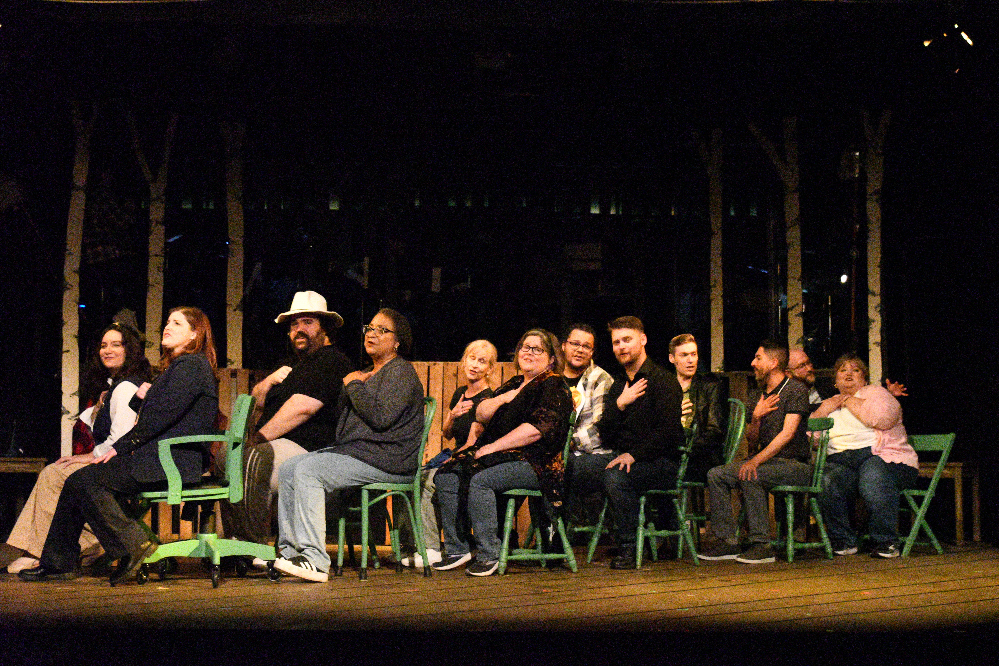

Come From Away: Humanity in the Face of Tragedy
Like many others in my generation, September 11th has always held a lot of meaning in my life. I was 16 at the time, and it left me with powerful memories that I will never forget, as is the case for everyone who witnessed it firsthand or watched it unfold on their television screens that day. Memory isn’t a strong suit of mine, but I will always remember the fear and uncertainty those events brought. For the past decade or so, I’ve developed an annual practice of watching hours of footage and documentaries in the days surrounding the anniversary, as the events still deeply fascinate me all these years later. So when I learned about Come From Away and discovered that it was playing at The Village Players Theatre, attending was a no-brainer.
“Welcome to the Rock!”
Come From Away is a musical based on a true story surrounding the events of September 11th, and it’s one I was unaware of until recently. In the immediate aftermath of the attacks on the Twin Towers and the Pentagon, the FAA shut down the airspace over the U.S., forcing thousands of international flights to make unexpected landings at airports around the globe. Those that were inbound from Europe were rerouted to Canada. One of these destinations was the small town of Gander in Newfoundland. When 38 planes carrying over 6,600 passengers showed up unexpectedly in a town of just 10,000 people amid an unprecedented international travel shutdown, things were chaotic, to say the least. Come From Away tells the story of what took place in that small town on 9/11 and in the days that followed, portraying people coming together to make the impossible possible in the face of tragedy, with a tasteful mix of humor and somber sincerity.
I’d like to take a moment and congratulate Village Players Theatre on selling out every performance for two weekends in a row. That’s a true testament to the level of production and talent they bring to the stage. That achievement almost prevented us from seeing the show, as we encountered a bit of a seating snafu. When we arrived at our seats, we discovered that they were occupied. It soon became apparent that their new online ticketing system somehow managed to double-book our seats. Seeing as how the show was completely sold out, our options were limited. The volunteers, wanting to make things right, pulled some strings and found a way for us to see the show as planned. So I’d like to offer a heartfelt thank you to the volunteers who made that happen. I mention this mix-up not to complain, but to demonstrate how well they handled the situation and ensured that we still got to enjoy the theater-going experience.
“You’re from away, so you’re a come from away.”
Going to live theatrical productions is rather new to me, as it wasn’t much of an interest of mine until the last year or two. With the exception of a couple of nationally touring productions, my experiences with live theater have been mostly limited to watching my daughter perform with Children’s Theatre Workshop for the past ten years. So I’m just now learning about the local theater “scene,” if you will (pun intended, I suppose). I’ve gotten familiar with some of the primary production groups in the region, including Toledo Repertoire Theatre, Stone Productions, and Actors Collaborative Toledo, to name a few. However, The Village Players Theatre has quickly become my preferred local theater, both as a venue and a production group. This production was especially enjoyable for me because I got to see actors from previous shows return in different roles, and I’m starting to recognize those individuals from show to show. I spotted Hayley Hoss and Laura Crawford, who both performed in Nerdy Prudes Must Die (my favorite show experience to date); Kenya Taylor, who played the grandma in The Wedding Singer; and Jarrod Alexander, who was the Dentist in Little Shop of Horrors. It also gave me my first opportunity to see Brandie Culbreath perform, as I had heard many great things about her performances, and she did not disappoint! It came as no surprise that the entire production was fantastic end-to-end, as has always been my experience there. It’s worth repeating that the level of production that The Village manages to achieve is impressive each and every time I’ve attended a show. The onstage orchestra did an incredible job of becoming the living soundtrack to the storyline. I’ve found myself watching the musicians at times during previous shows, but they effectively managed to fade into the background this time around, which I imagine is the ultimate goal. The cast delivered top-notch performances, which was all the more impressive given that they all portrayed multiple characters seamlessly throughout the show. Among the actors I wasn’t already familiar with, I thought Steven Sloan did a great job in the role of the mayor, and Sarah Malcolm, who played the pilot, was an absolutely fantastic singer and actress. Truthfully, the whole cast did an amazing job of bringing their characters to life, and I look forward to spotting them in future shows.
As for the story itself, I really enjoyed it. I think the writers did an excellent job of balancing all of the subjects that are addressed: the fear of the unknown that we all experienced that day; the humanity and love that the residents of Gander showed to the people who were stranded there, welcoming them with open arms; and the unexpected friendships and romances that developed. But perhaps most importantly, it demonstrates that despite our cultural differences, at the end of the day, we are all just human beings who want the best for each other.
If you’re interested in checking out The Village Players Theatre, their next show is Macbeth, which kicks off its run on October 30th. Tickets can be purchased here.